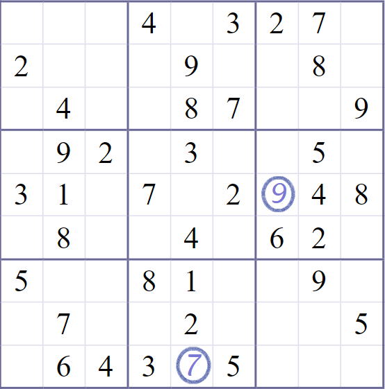
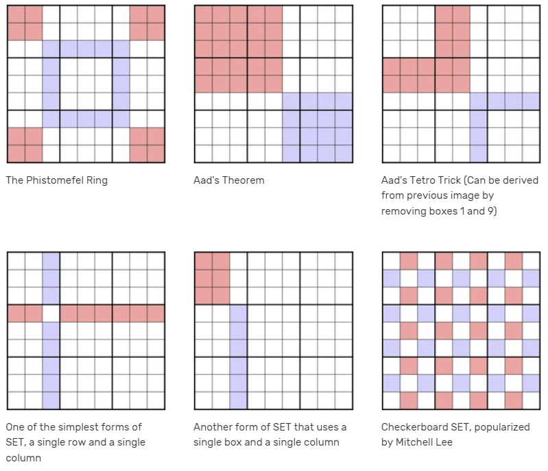
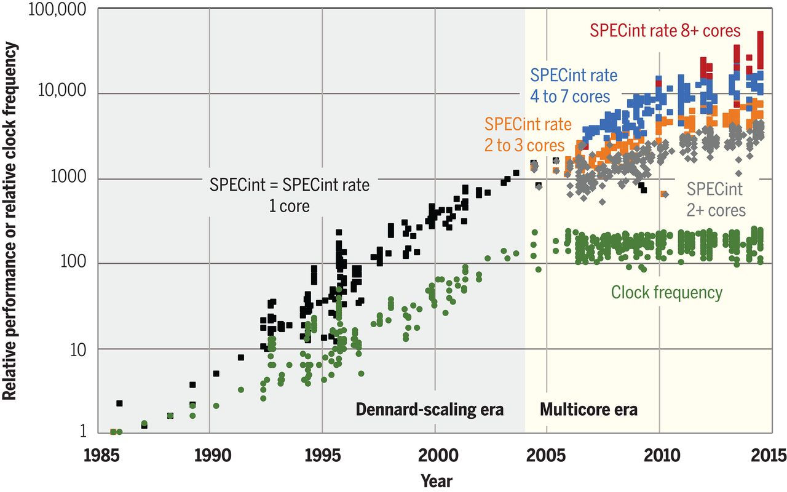
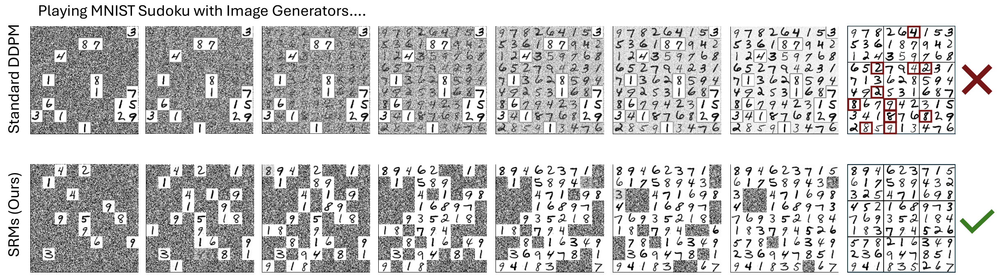
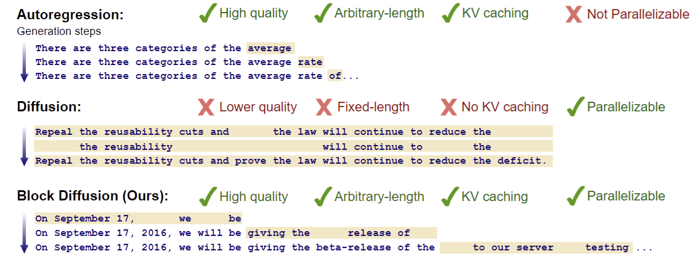

This essay has a companion paper on arXiv.
Idea
Width and depth
Some problems take a lot of work to solve. It is a lot of work to solve Riemann’s Hypothesis. It is also a lot of work to solve a trillion grade-school arithmetic problems. However, they are not the same kind of hard work, even if the required amount of “work” may be the same. One is “deep” while another one is “wide”. Recall the old joke about how 1000 people cannot dig a hole in 1 second.
We say that a computation is “wide” if it has many steps, but the steps can take place in any order. In particular, they can be done concurrently. It can be finished faster either by using a processor with a faster clock, or more processors. We say that a computation is “deep” (or perhaps “inherently sequential”) if it has many steps that must take place one after another. Using more processors would not help. Only using a processor with a faster clock would help.
Language modeling research has shown that autoregressive models need “chain of thought” when solving certain reasoning tasks. This benefit isn’t just observed in practice, but has theoretical foundations. (Feng et al. 2023) In the big picture, both theory and practice has shown that chain of thought approaches benefit precisely in allowing a variable amount of sequential processing, which is necessary for solving problems that need deeper computation than one forward pass allows. Trying to do it with less leads to errors, guesswork, or inefficient memorization in a desperate attempt to solve the problem “out of the model’s depth”.
As an example, if your program solve both easy and difficult Sudoku puzzles in exactly the same number of steps, you might reasonably question whether your method actually works for the hard puzzles. At one end of the limit, an easy Sudoku puzzle could be solved in a few steps by filling in each blank in parallel, since each blank could be solved by checking its row, column, and square. There is no sequential dependence between the blanks. At the other end of the limit, a hard Sudoku puzzle would involve a large amount of dependence between many blanks, which would require deep tree searches and significant backtracking to solve. It would be unreasonable to expect a parallel algorithm to solve a hard Sudoku puzzle, no matter the “width” of the parallelism, if it does not have the requisite “depth”.


A brief history of scaling
The recent history of deep learning has been drunk-high on parallel computing. Pushed to the very limits of parallelism: 256, 2048, 8192. How many cores can you pack on a single chip? This came at the price of precision. FP64, FP32, INT8… How low can you go? There are even proposals of a E4M0 floating point number – 4-bit float, 0-bit mantissa!
But it hasn’t always like this.
Fundamentally, this was not an unqualified success, but also a cope with lagging hardware. Since 2005, clock rate has been stuck at 4 GHz, placing a hard limit on how many serial steps you can make per wallclock time. GPUs are stuck at 1–2 GHz. This failure at the hardware level eventually propagated up the entire tech stack.

At the architecture level, we went from sequential models like RNNs to the highly parallelizable Transformer architecture. Some architectures are inherently more sequential than others. Recurrent neural networks (RNN) must process \(n\) tokens in \(n\) steps. So if a single step takes 1 ms, then processing 1000 tokens take 1 second. In contrast, a Transformer can take any number of tokens in 1 step, limited only by the size of your VRAM and processor count. As long as memory and processor count scaled, the stagnation in clock rate was not a binding constraint… Is it?
At the algorithm level, we went from reinforcement learning (RL) to imitation learning and pretraining. To do true RL, the network had to actually play out games one step after another. Imitation learning however is simply pretraining by another name, and can be scaled in parallel.
The success of pretraining over RL, 1M-batch over minibatch, Transformers over RNN, Nvidia over Intel, are all triumphs of the parallel over the serial, but perhaps we need to take account of it again? Might the pendulum swing back?
| sequential | parallel | |
|---|---|---|
| algorithm | RL | imitation learning, (self-)supervised (pre)training |
| architecture | RNN | CNN, Transformer, SSM |
| hardware | CPU | GPU |
For language generation, the story is quite clear. Before 2016, the SOTA was LSTM, which must be trained sequentially. Starting around 2018, pretrained Transformers took the lead, for which training is as parallel as the hardware can bear. Yet around 2021, sequential compute returned to inference in the form of “chain of thought”. With the DeepSeek-R1 of 2025, it is now quite probable that training will became a lot more sequential.
A similar story could be told for image generation. Before 2019, the SOTA was the U-net, which generates the whole image in parallel. In 2021, OpenAI shocked the world with DALL-E, a standard Transformer architecture that generated images patch-by-patch. But soon, diffusion models took over with their fully parallel generation across all pixels. And most recently, the image generator in OpenAI’s ChatGPT seemed to have reverted back to generating images patch-by-patch.
As for RL itself, the 2013–2017 period was its highlight, with RL agents becoming superhuman at Atari, Dota, and Go. Indeed, during the early days of OpenAI, it focused on RL, with the Dota bot being its first publicity success. However, things changed starting with GPT-1 of 2018, the generatively pretrained Transformer. The so-called “RL from human feedback” (RLHF) is only barely RL, since each “game” in an RLHF training run consists of a single reply! It is as if playing a game that ends after making exactly one move.
If the best kind of training shifts back to be more serial than parallel, then there will be a reckoning. If a few months down the line, we see a new scaling law emerge from the big labs pushing the R1-Zero training method to even longer chains at even smaller batches, then deep learning can suddenly acquire a very serial RL phase. Pretraining would still need giant GPU clusters, but the RL step would suddenly look more like Cray supercomputers – a few giant CPUs, immersed in Fluorinert, running at 100 GHz. Compared to Nvidia GPUs, those would be much more expensive in terms of FLOP/USD, but in terms of serial-FLOP/sec/USD, cheap!
Seymour Cray was famous for packing, powering, and cooling circuits incredibly densely. Classic Crays were made obsolete by microprocessors, but we may yet do similar things at a larger scale. Hyperscale data centers and even national supercomputers are loosely coupled things today, but if challenges demanded it, there is a world with a zetta scale, tightly integrated, low latency matrix dissipating a gigawatt in a swimming pool of circulating fluorinert.
In this scenario, an RNN-Transformer hybrid might become the common architecture for cutting-edge training, in two phases. In the first phase, it would be pretrained in parallel over ~1 million GPUs with ~1 million batch size. In the second phase, it would be reinforcement-learning with a minibatch of rollouts per update, on special hardware that maximizes the update frequency. This future hardware could be a small cluster of ~10 massive RL-specific chips with diameter ~1 meter packaged closely to maximize memory bandwidth, immersed in liquid nitrogen cooling to run at ~100 GHz without melting. Such hardware does not exist today, since it is highly uneconomical compared to existing GPUs, as measured in FLOP/sec. However, in a scenario where a long sequence of serial training is necessary, such hardware may be economical as measured in serial FLOP/sec.
An RL-specific chip may be ~1 meter in diameter, because Cerebras already produces chips that are ~20 cm on each side, giving a lower bound. On the other direction, a silicon wafer is ~50 cm in diameter, giving an upper bound.
The GPU and batch size are both in the millions, because those numbers are used for the current (2025) largest pretraining runs.
AS for the ~100 GHz clock rate, we have the following data:
- As of 2025, hobbyist overclockers have already reached 9.1 GHz using just a commercially available Intel CPU, cooled by liquid nitrogen, so I believe another factor of 10 is within the technical possibilities.
- In 2000, Intel planned for a CPU at 10 GHz for 2005. The plan fell through, and in 2004, Intel hastily cancelled the originally planned-for next-generation chips (Tejas and Jayhawk) due to intractable overheating. However, it shows that 10 GHz is well within the limits of known silicon technology. The heat dissipation issues are certainly not a hard technological limit, but merely too uneconomical in a consumer product.
Though currently uneconomical, it is entirely possible for such technology to be resurrected for cutting-edge AI training. Compared to the currently planned million-GPU datacenters, such a special-purpose CPU cluster would be comparatively affordable.
Actually existing complexity
Like axiomatic logicians, computational complexity theorists can occasionally be defensive, since they are often haunted by the fear of irrelevance. This is not an idle fear, especially in the context of AI research. It is healthy to try to not become like Minsky and Papert who, having exhaustively demonstrated that 1-layered neural networks are not powerful, declared deeper neural networks to be a “sterile extension” of 1-layered neural networks, based on their intuition.
In the best case, computational complexity theory can discover algorithms that are fast in practice, or prove that certain algorithms are impossible in a way that matters. In the less happy case, algorithms can be invented that are fast in theory, but not in practice, such as the “galactic algorithms”. In the worst case, an impossibility proof is correct, yet wrong in a way that matters. How could this be the case? Every mathematical abstraction makes certain inaccuracies, and a lot can slip through the cracks between the real world and the mathematical realm.
As a concrete example, consider protein folding. In theory, a protein is merely a floppy string of amino acids, and to fold it, there seems to be no way but to try out every one of its configurations in search of its minimal-energy form. However, even nature does not laugh at the difficulties of computation. If a protein is actually hard to fold, then it would be dangerous for the organism to produce such a thing, and thus it would be removed by evolution. In this way, the problem of “folding proteins that a biologist might wish to fold in practice” turns out to be an easier problem than “folding proteins”. This perhaps explains the success of AlphaFold, which can fold a protein in a few forward passes. Surely it is not solving a hard problem with an impossibly small amount of compute. Rather, what appears to be a hard problem is not really hard, and what went wrong was the original act of abstraction that turned protein folding in practice into an unrealistically hard problem in theory.
So where is this paper placed? We place it into the category of “half-irrelevant for practice”. On the one side, the “perfect” diffusion is a vanishing point that can never be reached in practice. On the other side, the Turing-complete bad diffusion is a construction that has given up any pretense of being about diffusion models. It is a deliberate arbitrary code execution exploit of the standard diffusion framework. Indeed, we believe that any attempt to train a score network in practice would result in a score network that is quite tame, and definitely incapable of arbitrary code execution.
So why this paper? One, because it is fun. Two, because some of the intuition might be helpful for understanding actually existing diffusion models. It is in this sense that we say this paper is “half-irrelevant”. Real diffusion models are not perfect, but also not malicious, and they seem to behave closer to perfection than malice. Because of this, we conjecture that real diffusion models do converge fast, in \(O(1)\) steps. Assuming this is the case, then using them for solving tasks that require more than \(O(1)\) serial steps is impossible.
Diffusion models
A diffusion model can be used to sample from a distribution with a variable amount of computing steps. This is usually understood as an advantage, in the sense of providing a compute-precision tradeoff: With a few steps, one can sample from the distribution approximately, and with increasing number of steps, the distribution can be sampled from with increasing precision. However, this intuitive picture also suggest that this advantage may be a curse. Specifically, it suggests that after a few sampling steps, further computation is “wasted” in the sense that they refine the result in a way that does not matter, because the result has converged.
Indeed, empirically, diffusion models typically converge rapidly with a fixed number of denoising steps regardless of input. For example, (Ravishankar et al. 2024) studied using diffusion models for depth-perception, and showed that there is no difference between 5 and 100 sampling steps, Similarly, (Austin et al. 2021) showed that for a diffusion language model they trained, the perplexity of language modeling was essentially the same for 10 and 1024 diffusion steps.
While such rapid convergence may be regarded as an advantage, this would not be when the problem is deep. Converging on a solution faster than the depth of the problem requires would likely lead to failures. Indeed, certain kinds of empirical failures of diffusion language models suggest that they struggle precisely on tasks that require sequential processing. For instance, when using diffusion models to solve Sudoku puzzles, (Wewer et al. 2025) found that denoising all digits simultaneously worked for easy puzzles but failed for difficult ones. Performance improved only when denoising fewer digits at a time, with optimal results achieved by denoising just one digit at a time, essentially reverting to a purely sequential process.

(Arriola et al. 2025) noted that discrete diffusion models underperform compared to autoregressive approaches. They proposed to solve this by… reintroducing autoregressive generation, applying diffusion to generate a few tokens at a time.

Setting up the framework
The theory part of the paper has three parts:
- A mathematical framework in which these empirical observations kind of exists in kind of the same way. We make no promises that this framework actually has anything to do with practice, but it looks fun.
- A theorem showing that a “perfect” diffusion models are constrained to the \(\mathsf{TC}^0\) complexity class due to their rapid convergence.
- An explicit construction of a “bad” diffusion models to perform any Turing-computable operation. The construction works precisely because they do not converge quickly. They do not converge quickly precisely because they fail at reversing any forward diffusion process.
We begin by setting up the framework.
Diffusion modeling
Diffusion models work by gradually adding noise to data and then learning to reverse this process. Think of it as watching a drop of ink spread through water, and then learning to recover the original drop from the diluted state. This intuitive physical analogy connects to their mathematical foundation, which borrows concepts from thermodynamics and statistical physics.
In machine learning literature, two main formulations have emerged to describe this process. The first, Denoising Diffusion Probabilistic Models (DDPM), approaches the problem through discrete time steps. The second, score-matching with Langevin dynamics (SMLD), uses continuous differential equations. Despite their different origins, these two approaches are fundamentally equivalent (Kingma et al. 2021; Luo 2022).
The connection works in both directions. DDPM can be seen as a discretized version of SMLD, where each DDPM update step corresponds to using the Euler–Maruyama method to solve SMLD’s stochastic differential equation (SDE). Conversely, if we take the limit of infinitely many DDPM steps with infinitesimally small noise additions, we recover the continuous SDE formulation of SMLD. This equivalence means that models trained using either framework can be used interchangeably for sampling purposes.
For clarity and mathematical convenience, we primarily use the SMLD formulation throughout this paper, though our results apply equally to both frameworks, since they are equivalent.
Consider a data distribution \(\rho_{data}\) over the real space \(\mathbb{R}^d\). The task of SMLD is to learn a score-matching function \(f_\theta\) that allows us to sample from \(\rho_{data}\).
A noise schedule is a continuous function \(\beta\) of type \([0, \infty) \to [0, \infty)\), such that \(\beta(t)\) can be interpreted as the noising rate in the forward diffusion process at time \(t\). We require \(\int_0^\infty \beta(t) dt = \infty\), which can be interpreted as saying that eventually all signal is destroyed, leaving only noise.
Define the distribution at \(t=0\) by \(\rho_0 := \rho_{data}\). Suppose we sample a data point \(x_0 \sim \rho_0\), and let it evolve according to the SDE
\[ dx_t = -\frac{1}{2} \beta(t) x_t dt + \sqrt{\beta(t)} dW_t \]
then this implies a time-evolution of the data distribution over time, which can be directly solved by the Fokker-Planck equation:
\[ \partial_t \rho_t = \frac{1}{2} \beta(t) (\nabla \cdot (x \rho_t) + \Delta \rho_t) \]
At the \(t \to \infty\) limit, the distribution converges to the standard normal distribution \(\mathcal{N}(0, I_d)\).
For any time \(T > 0\), the time-evolution can be exactly reversed as follows. Let \(\hat{x}_T\) be sampled according to \(\rho_{\hat{x}, 0} := \rho_T\), then the following SDE equation would lead to an exact reversal: \[ d\hat{x}_t = \frac{1}{2} \beta(T-t) \hat{x}_{t} dt + \beta(T-t) \underbrace{\nabla_{\hat{x}_{t}} \ln \rho_{T-t}(\hat{x}_{t})}_{\text{score function}} dt + \sqrt{\beta(T-t)} dW_t \] where by “reversal” we mean that \(\rho_{\hat{x}, t} = \rho_{T-t}\) for any \(t \in [0, T]\) (Anderson 1982).
Assuming that a score-matching function \(f_\theta\) has been trained, such that
\[ f_\theta(x, t) \approx \nabla_x \ln \rho_t(x) \]
for all \(t, x\), then \(\rho_{data}\) can be approximately sampled by initializing a pure-noise sample \(\hat{x}_T \sim \mathcal{N}(0, I_d)\), then solving the backward SDE
\[ \hat{x}_{t-dt} = \frac{1}{2} \beta(t) \hat{x}_t dt + \beta(t) f_\theta(\hat{x}_t, t) dt + \sqrt{\beta(t)} dW_t \]
by any SDE integration method, such as Euler–Maruyama method. By varying the sizes of the \(dt\) steps in the Euler–Maruyama method, we can recover different noise-schedules for DDPM.
If \(f_\theta(x, t) = \nabla_x \ln \rho_t(x)\) is exact, then at the limit of \(T \to \infty\) and infinitely many steps in the Euler–Maruyama method, we can exactly sample from \(\rho_{data}\).
Circuit complexity theory
A circuit complexity class is a style computational complexity classes. In our paper, we focus on the \(\mathsf{TC}^0\) class, which is particularly suited to studying the computational complexity of neural networks, because a family of feedforward neural networks with a constant number of layers is essentially a \(\mathsf{TC}^0\) circuit family. Indeed, the class of \(\mathsf{TC}^0\) were first proposed specifically in the 1980s to model the computational complexity of neural networks. (Parberry and Schnitger 1988)
Formally, \(\mathsf{TC}^0\) is defined as the class of problems that can be decided by a family of boolean circuits with the following properties:
- Boolean circuits: A boolean circuit is a directed acyclic graph where each node (or gate) computes a boolean function of its inputs. The inputs to the circuit are boolean variables, and the output is a single boolean value.
- Unbounded fan-in: Each gate in the circuit can receive inputs from an arbitrary number of other gates. This contrasts with bounded fan-in circuits where gates have a limited number of inputs. Convolutional neurons have bounded fan-in, but fully-connected neurons have unbounded fan-in.
- Polynomial width: The number of gates at each level of the circuit is bounded by a polynomial in the input size \(n\).
- Constant depth: The longest path from any input to the output is bounded by a constant that does not depend on the input size. This may be interpreted as stating the circuit family is “highly parallelizable”.
- Threshold gates: A threshold gate is a binary neuron. It can be written as a function \(\theta(\sum_i w_i x_i + t)\), where \(w_i, t\) are real numbers, and \(\theta\) is the binary step-function
For those unfamiliar, here is a short exercise:
- With 1 layer of threshold gates, construct “gadgets” such as the AND gate, the NOT gate, and all other common boolean gates.
- With 2 layers, construct the \(k\)-EQUALS gate for each \(k\), which outputs 1 if exactly \(k\) inputs are 1, and 0 otherwise.
- With 3 layers, construct the IS-IN gate for any finite subset of \(\mathbb{N}\).
From the definition, it is clear that each member \(\mathsf{TC}^0\) circuit family is essentially a feedforward neural network. However, this only consists of a single member. Here is where the “family” part of the definition becomes important.
Since a neural network has a fixed number of inputs, it would be unable to process more inputs than the number of neurons in its input. This brings the idea of a circuit family. A circuit family is a set of circuits \(C_1, C_2, \dots\) such that each \(C_n\) is capable of processing exactly inputs of length \(n\). Computational complexity theory studies not the complexity of problems solvable by a single circuit, but a circuit family, because any single circuit is merely equivalent to a lookup table, and the complexity of the problem it solves is always trivial. If this seems odd to you, remember that to a computational complexity theorist, 1 and 1 trillion are the same – both are \(O(1)\).
Consequently, a \(\mathsf{TC}^0\) family of feedforward neural networks is defined as a set of neural networks \(C_n\), such that there exists a constant \(D\) (the upper bound on depth), and a polynomial \(p\) (the polynomial bound on width), such that each \(C_n\) has depth \(\leq D\) and number of neurons \(\leq p(n)\).
While the \(\mathsf{TC}^0\) class is most similar to feedforward fully-connected neural networks, this is not necessarily the case. Indeed, a family of bounded-depth polynomial-width Transformers is still in the \(\mathsf{TC}^0\) class. This means the theorem in the paper applies to them as well.
Language modeling
At the most abstract level, a language is simply a set of words made of letters. Formally:
- An alphabet \(\Sigma\) is a finite nonempty set. Each element in the alphabet may be called a letter or a token.
- A word in an alphabet \(\Sigma\) is a finite sequence of elements of \(\Sigma\).
- A language \(L\) in an alphabet \(\Sigma\) is a set of words in the alphabet \(\Sigma\).
A prefix language modeling problem is, given a sequence of tokens \(x_1, \dots, x_n\), to compute the next token \(x_{n+1}\). An example would be the word problem for finite groups: Given a finite group \(G\), and a sequence of elements in the group \(g_1, \dots, g_n\), compute \(\prod_{i=1}^n g_i\). In particular, if \(G\) is the permutation group on 5 elements, then the corresponding group multiplication problem is strongly suspected to lie outside \(\mathsf{TC}^0\) class.
An example would be the word problem for finite groups: Given a finite group \(G\), and a sequence of elements in the group \(g_1, \dots, g_n\), compute \(\prod_{i=1}^n g_i\). Intuitively, there is a method that computes this in \(\log_2(n)\) parallel steps by binary multiplication: the first parallel step computes \(g_1g_2, g_3g_4, \dots\), and so on. Since \(\log_2(n)\) is not constant, this would not lie within the \(\mathsf{TC}^0\) class. For certain groups, there are shortcuts to this process. For example, for any prime number \(p\), the word problem in the mod-\(p\) multiplicative group is computable in constant number of parallel steps via Fermat’s little theorem. However, shortcuts probably do not exist in general. Indeed, if \(G\) is the permutation group on 5 elements, then the corresponding word problem is not in the \(\mathsf{TC}^0\) class, assuming widely believed conjectures in computational complexity theory. (Liu et al. 2023)
While usually, a diffusion model is used for generating from a continuous state space such as \(\mathbb{R}^d\), it can be used to model discrete distributions as well. This is necessary for language modeling. We consider the case closest to continuous state space modeling – quantization: One divides the continuous state space \(\mathbb{R}^d\) into regions, and assigns a token to each region. This then allows sampling a discrete distribution from a diffusion model with continuous state space. Formally, if \(\Sigma = \{a_1, a_2, \dots, a_M\}\) is the alphabet, then we divide \(\mathbb{R}^d\) into \(M\) regions \(V_1, \dots, V_M\), such that each region \(V_i\) maps to a token \(a_i\).
Also, as usual in circuit complexity theory, we need more than a single score-network \(f_\theta\), but rather, a full sequence of them, so we define a **\(\mathsf{TC**^0\) family of score-networks} to be a family of feed-forward neural networks \(f_{\theta, 0}, f_{\theta, 1}, \dots\) , such that:
- Each \(f_{\theta, n}\) takes as input \(n+2\) elements \(x_1, \dots, x_n, x, t\), and produces an output \(f_{\theta, n}(x, t | x_1, \dots, x_n)\).
- The family \(f_{\theta, n}\) has \(O(1)\) depth and \(\mathsf{poly}(n)\) width.
Note that for the theorem to hold, it is not necessary to assume the family of neural networks are feed-forward. The theorem holds for any family of score-networks for which a single forward pass is in \(\mathsf{TC}^0\). This includes, for example, Transformers and state-space models (Merrill, Petty, and Sabharwal 2025, 2025). We stay with feedforward networks because it is visually obvious how they are in the \(\mathsf{TC}^0\) class.
Finally, since a diffusion model may solve a problem only with high enough probability, instead of solving it deterministically, we make the following definition: A prefix language modeling problem is solved with constant probability bound if there exists some \(\epsilon > 0\), such that for each input token sequence \(x_1, \dots, x_n\), let \(x_{correct}\) be the correct response, then \[ p(x_{correct}|x_1, \dots, x_n) > p(x'|x_1, \dots, x_n) + \epsilon, \quad \forall x' \neq x_{correct}. \]
Counter machines
To show that a deliberately bad diffusion model may be Turing-complete, we show how they could simulate a particular kind of Turing-complete abstract machines: the counter machines. This is not necessary for understanding the theorem on “perfect” diffusion models.
A counter machine can be thought of as finite-state automata augmented with memories, each of which can hold a single unbounded integer. In our paper, we use the following form of counter machine, lightly modified from (Fischer, Meyer, and Rosenberg 1968):
- The machine has access to a finite number \(k\) of registers, notated as \(r_1, \dots, r_k\). Each register stores a single integer.
- The machine also has access to a read-only input tape, on which the machine has a read-head that can be moved in either direction. At machine start-up, the input tape has contents ^\(a_1a_2\dots a_n\)$, where ^ and $ denote the beginning and the end of the word, and \(n\) is the length of the input word. The read-head is placed at the character just after ^, which may be $ if the input word is empty.
- A program for the machine is a numbered list of instructions.
- Each instruction is of the following format: conditional on the state of the read-head on the input tape and on whether each register is zero or not, modify every register by an amount in \(\{-1, 0, +1\}\), move the read-head by up to one position in either direction, then jump to another instruction.
- There is a special instruction named “HALT”. If the machine arrives at such an instruction, it halts. Each HALT instruction may be marked as either an accepting HALT, or a rejecting HALT.
- To accept an input word means the machine reaches an accepting HALT state. Similarly for rejection.
- A decider for a language is a machine that accepts words in the language, and rejects words out of the language. It must halt on all inputs.
It is known that counter machines are Turing-complete, in the sense that a universal Turing machine can be simulated by a counter machine with 2 registers. (Minsky 1967) This implies in particular that any language that is decidable by a Turing machine is decidable by a counter machine.
The main part
Perfect diffusion is in TC0
Suppose there exists a \(\mathsf{TC}^0\) family of score-networks \(f_{\theta, 0}, f_{\theta, 1}, \dots\), such that for each \(n\) and each \(x_1, \dots, x_n\), the function \(f_{\theta, n}(x, t | x_1, \dots, x_n)\) exactly computes the score function of some initial distribution \(\rho_{0, n}\) with bounded first moment: \(\mathbb{E}_{x_0 \sim \rho_{0, n}}[\|x_0\|] \leq 1\).
If this family solves a prefix language modeling problem at the limit of infinite time SMLD with constant probability bound, then the problem is in the \(\mathsf{TC}^0\) class.
The idea of the proof is simple. We first quote an inequality from the literature, which provides a universal upper bound on how many steps are sufficient for sampling the SMLD within a constant probability bound, then we derandomize it while still remaining within the \(\mathsf{TC}^0\) class.
The big idea of the derandomization is as follows: Given an algorithm that generates the correct token with probability that is of a bounded amount higher than generating any incorrect token, we can run the algorithm many times, and take the majority vote. By Hoeffding’s inequality, there exists some random seed, for which the majority vote is correct on every single length-\(n\) input. Now we hardcode that random seed.
The details of the proof (which is short) are in the paper. \(\blacksquare\)
Inexact score-matching
The requirement for exact score-matching is necessary for the following two reasons:
First, the technical reason is that the full form of the inequality we quoted is
\[ TV(\rho_{DDPM, T}, \rho_{\hat{x}, 0}) \leq c \frac{d (\log T)^3}{T} + c \epsilon_{\text{score}} \sqrt{\log T}. \]
where the term \(\epsilon_{\text{score}}\) denotes the score-matching error between the true score function of \(\rho_{\hat{x}, 0}\) and the approximation \(f_\theta\). As this extra term increases with \(T\), the proof above does not apply. Perfect score-matching sets that term to zero, thus allowing the theorem to work.
Second, the intuitive reason is that if we have no requirement on score-matching, then there is essentially no constraint on the computational power of SMLD, by the construction in the next section.
Practically relevant score-networks are intermediate between two extreme cases. We believe that if \(f_\theta\) is a good enough, but not perfect, score-matching network, then a generalized version of the above theorem still applies. However, finding the right way to quantify the goodness, as well as proving such a generalization, is left as future work.
Bad diffusion is Turing-complete
Since counter machines are Turing-complete, it suffices to show how to simulate any counter machine with diffusion. Suppose we are given a counter machine with \(k\) registers, we simulate it by constructing a “pinball” machine that operates according to the SDE
\[ d\hat{x}_t = \frac{1}{2} \hat{x}_t dt + f_\theta(\hat{x}_t, t) dt + dW_t \]
under a smooth force field \(f_\theta\). The pinball machine has a single ball, whose location is \(\hat{x}_t\). The ball rolls around a state space \(\mathbb{R}^d\) guided by the force field \(f_\theta(\hat{x}_t, t)\). Indeed, the force field can be time-independent, so we write it as \(f_\theta(\hat{x}_t)\) instead.
The state space is divided into three parts as \(\mathbb{R}^d = \mathbb{R}^k \times \mathbb{R} \times \mathbb{R}\). The first part \(\mathbb{R}^k\) represents the \(k\) registers. The second part \(\mathbb{R}\) represents the program counter, which tracks the line-number of the program. The third part \(\mathbb{R}\) is used for jumping between instructions, providing enough room for the ball to roll without “crossing the wires”.
The space is divided into cubic cells of side lengths \(L\). We denote each cell by \(k + 2\) integers.
Like the state space, the force field has three parts too. One part simply cancels out the \(\frac{1}{2} x_t\) term. Another part forms “grooves” along which the ball rolls, thus implementing the counter machine. The third part points towards the center-lines of the grooves, so that the ball is not knocked off the grooves by the noise term \(dW_t\). Of course, eventually the noise will knock the ball off the grooves, but if the force is strong enough, and the cubic cells have a large enough side length, then the machine will reach completion without being knocked off the grooves, with arbitrarily large probability.
Instead of formally specifying the grooves, it is simpler to give an example. Suppose at line number 32, the instruction reads “If the current state of register 1 is zero, then increment register 2 and jump to line 23, else jump to line 33”, then this is implemented by drawing the following paths:
- \((0, r_2, \dots, r_d, 32, 0) \to (0, r_2 + 1, \dots, r_d, 32, 32) \to (0, r_2 + 1, \dots, r_d, 23, 32) \to (0, r_2 + 1, \dots, r_d, 23, 0)\).
- \((r_1, r_2, \dots, r_d, 32, 0) \to (0, r_2, \dots, r_d, 32, 32) \to (0, r_2, \dots, r_d, 33, 32) \to (0, r_2, \dots, r_d, 33, 0)\) for nonzero \(r_1\).
By smoothing the corners of the paths, we obtain a smooth force field.
How strong must the force be to keep the ball rolling on the grooves? The noise term \(dW_t\) would, over a long enough time, eventually knock the ball off the grooves. This can be suppressed by either using a strong confinement force field, or by using a weak confinement force field but a large cubic cell side length \(L\). It turns out that we don’t need a very strong force or a very large cell.
Let the counter machine have \(N\) instructions. Suppose it halts within \(S\) steps, then the total distance travelled by the pinball would be \(O(NSL)\), where we need to account for the time necessary to jump between instructions. Then, since the rate of leakage is on the order of \(e^{-L^2}\), we need only require \(L \geq O(\sqrt{\ln (NSL)})\) to suppress the probability of leakage during the entire computation to a small constant. In particular, for any fixed \(N, S\), because \(L\) grows faster than \(\sqrt{\ln (NSL)}\), there exists a big enough \(L\) for which the machine will halt without leakage, for probability as close to \(1\) as one desires. This machine operates under a force field that is smooth, and has Lipschitz-continuity bounded by universal constant.
Suppose that we have a language that is decidable by a Turing machine when it is restricted to a working tape with length \(O(f(n))\), where \(n\) is the input length, and \(f\) is some monotonically increasing function, then by (Fischer, Meyer, and Rosenberg 1968, Theorems 3.1 and 3.2), it is decidable by a counter machine that takes \(e^{O(f(n))}\) steps to halt. Thus, it suffices when \(L \geq O(\sqrt{f(n)})\).
Future work
Theoretical
We have shown that perfect diffusion models with exact score matching are constrained to \(\mathsf{TC}^0\), while deliberately “bad” diffusion models can be Turing-complete. The more realistic intermediate case remains open, where the score network approximately computes the score function.
We conjecture that similar computational limitations apply when the approximation quality is sufficiently high, but formalizing this notion of “sufficiently good approximation” and proving the corresponding result requires further work. We make this conjecture based on two reasons. One, the aforementioned empirical observation that diffusion models converge rapidly. Two, because the forward diffusion converges exponentially rapidly to the standard normal distribution \(\mathcal N(0, I)\), we believe that the backward diffusion process, as long as it is sufficiently close to the score function of a forward diffusion process, would be forced to converge in \(O(1)\) time, since exponential decay is fast decay.
Our analysis focuses on diffusion models operating on \(\mathbb{R}^d\) with subsequent discretization. However, other formulations of discrete diffusion exist, such as the directly discrete approach in (Austin et al. 2021). For these models, we conjecture that \(\mathsf{TC}^0\) limitations apply regardless of score network quality, as the finite state space inherently constrains the “computational capacity” of the diffusion process. Intuitively, a finite state space allows encoding only a finite number of bits per state before the signal-to-noise ratio1 is exhausted, and the reverse diffusion reaches \(t=0\).
1 See (Kingma et al. 2021) for a formalization of signal-to-noise in diffusion modeling.
Between finite state spaces and \(\mathbb{R}^d\) lies the intermediate case of continuous but compact state spaces, such as the unit ball in \(\mathbb{R}^d\). While our “pinball machine” construction would still work in such spaces, it would require dividing the compact space into an increasing number of cells. This means the force field, while smooth, cannot maintain bounded Lipschitz-continuity coefficients. Because of this, we hypothesize that under the additional requirement of \(O(1)\) Lipschitz-continuity, diffusion models on compact spaces would be constrained to \(\mathsf{TC}^0\) regardless of score network quality, effectively making them computationally equivalent to finite state models.
Empirical
The animating big-picture idea behind this paper is that certain tasks are inherently sequential, such that any parallel computation that takes too little sequential steps must necessarily err. Sequential processing and consequences of its lack has been systematically studied for Transformers under the name of “chain of thought”, but not for diffusion models. We have collected a few suggestive examples gleaned from the literature, but it would be a valuable contribution to the literature to test this hypothesis systematically on diffusion models. We conjecture:
- Tasks requiring deep sequential reasoning should exhibit a sharp performance cliff when addressed by diffusion models with a fixed number of denoising steps.
- Adding more denoising steps beyond a certain threshold should yield minimal improvements for \(\mathsf{TC}^0\) tasks but continued improvements for tasks outside this complexity class.
- Performance on complex sequential tasks should improve significantly when introducing autoregressive components, as seen in (Arriola et al. 2025).
Controlled experiments testing these predictions would provide valuable empirical validation of our theoretical framework and guidance for the further development of diffusion models.
Architectural
The most promising direction may be architectures that interpolates sequential and parallel computation dynamically, shifting to the sequential mode for tasks that demand them. We point out several particularly worthy directions for interpolation:
- In architecture, interpolation between massively parallel models (Transformers, state-space models) and sequential ones (recurrent neural networks).
- For language generation, interpolation between full-sequence generation (typical of diffusion language models) and autoregressive generation (common in Transformer-based models). While both approaches have been studied extensively in isolation, their combination remains relatively unexplored.
- Interpolation between SMLD and neural ODE frameworks. SMLD offers rapid convergence through massive parallelism, while neural ODEs provide slower convergence with more sequential computation.
Conclusion
I don’t read conclusions in papers, and I don’t write them either. They seem like a stupid convention, when having an abstract and an introduction is not enough to pad your page numbers, so you had to rephrase them, differently but the same… In fact, the only reason there is a conclusion in the arXiv paper is because academic style requires there to be one, which is why I got Claude 3.7 to write it… without any modification!